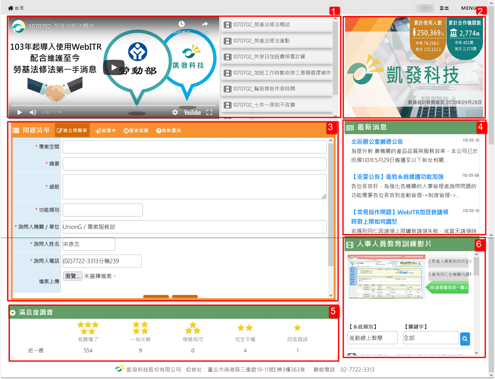

網站服務分析與調整規劃
2021/4
wireframe-
網站已年久失修，缺乏協助內容，主要功能僅有提供進線提問的表單功能，影音教學也多為3年前更新。著手進行數據點設置（Google Analytics)並運用GTM 設定網站行為監測。
負責項目
數據分析
- 了解網站內容與對應資料庫結構，設定GA追蹤碼，並設定網站中各項點擊行為追蹤，便於觀察各項內容成效。
- 利用數據觀察，各項行為中點擊率最低的為視線焦點版位的影片教學
- 右側輪播版位對使用者幫助不大，輪播內容也無承接頁。
- 最新消息內容較多，但採用輪播方式不易查找資訊。
- 人事教育訓練影片也並未提供對應資訊，效益明顯不足。
- 舊版網站首頁
產品功能企劃
- 利用數據分析，提案進行改善，移除影片教育訓練、右側輪播版位、人事教育訓練影片。
- 增加最新消息版位，並取消輪播功能，可一次顯示多則內容。
- 下方滿意度調查共分為5星等評分，但實際上客戶不太需要了解1-4顆星的定義，可簡化為兩種數據：成功解答率與再提問率，運用圓餅度公佈公司績效，並用兩種區間對比來顯示。
- 利用教學文件提供第二線協助，減少提問量，提昇客服效率與品質。
- 新版網站首頁
功能特點
- 提供文件類型教學，分為基本操作教學與 常見操作問題，並利用點選率參考兩週定期更新，且開發置頂功能，能於特定期間置放常發生問題參考。
- 右側更名為系統公告，將原先短點的輪播功能移除，版位顯示較改版前清楚易懂且不須在等候輪播秒數時間。
- 滿意度調查區塊縮小，改為數據實績，提供兩種區間參考解答品質比較。
- 內頁增加依據功能分類的教學文件，並提供即時篩選搜尋功能，快速依照問題關鍵字尋找解決方案。
- 教學頁面採PDF文件崁入，可切換同類別功能的教學文件
頁面內容
- 教學文件列表頁
- 教學文件詳細頁
- 教學文件列表頁
開發成果
- 上線後比較，較未上線頁面瀏覽率增加66%，網站使用率明顯增加。
- 與去年同期相比平均單日問題單量（人力成本）減少5％。若非今年因疫情影響，居家辦公等問題增加，問題單的減少比例應該會約略為10％左右。